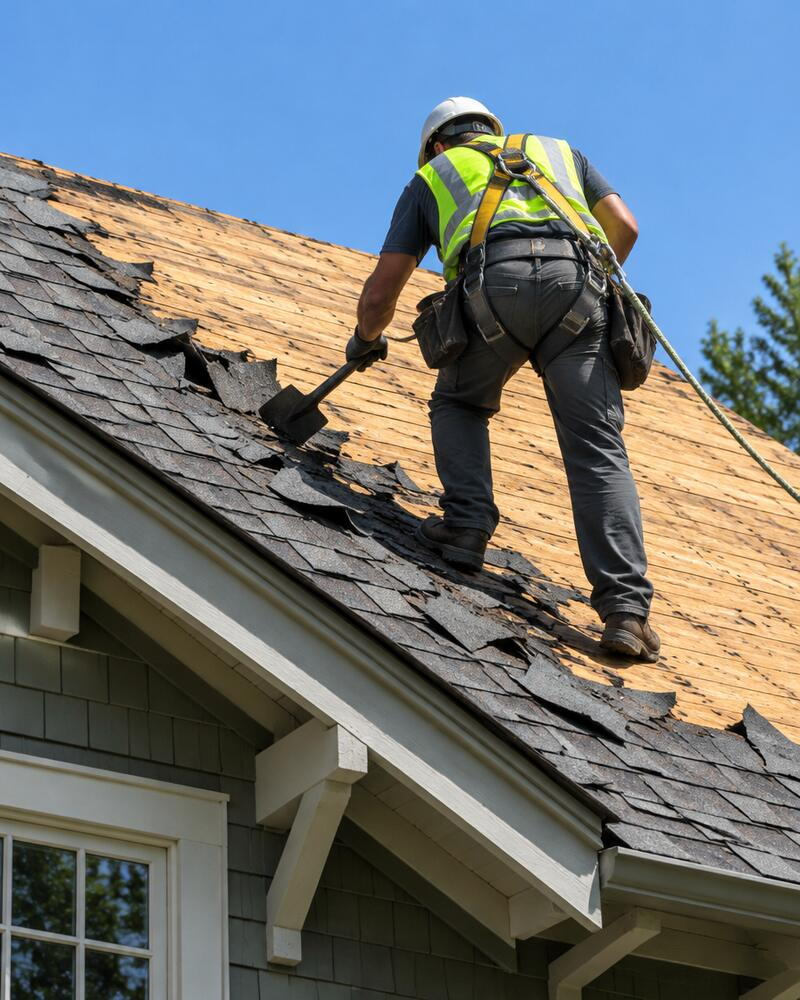
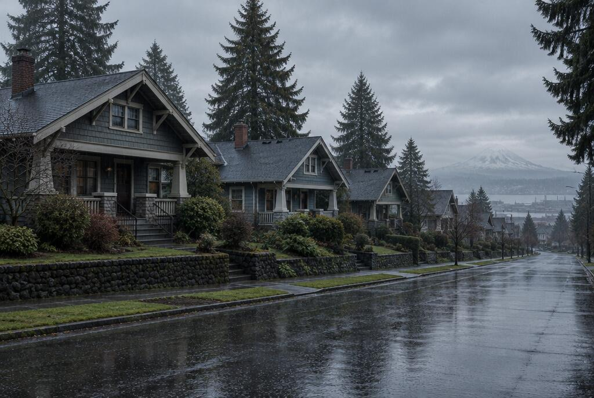
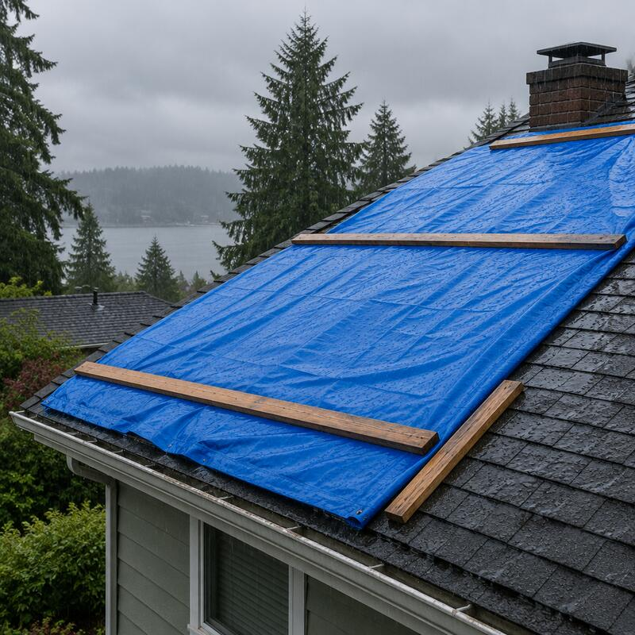
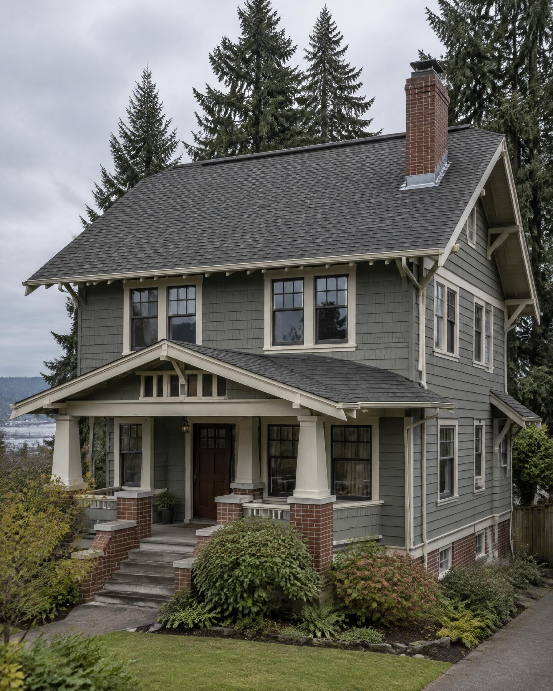
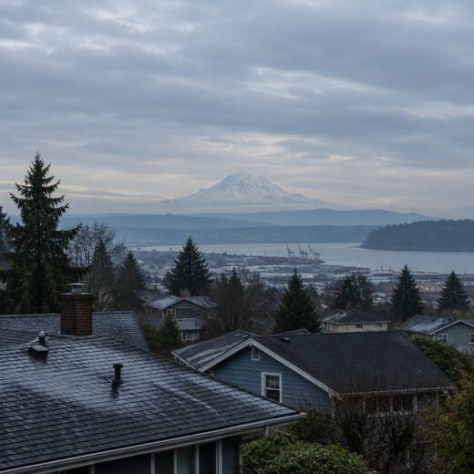

We only open a roof when the forecast gives us a run of dry days.



What a roof costs
in Tacoma, roughly
Prices
Slide to your roof’s size. A square is 100 sq ft; most Tacoma houses are 15–30.
| Composition | 2 dry days | $13,200–$18,700 |
|---|---|---|
| Standing-seam metal | 4 dry days | $26,400–$37,400 |
| Cedar shake | 4 dry days | $28,600–$41,800 |
| Leak repair | found at the source | from $450 |
| Moss | cleared, zinc strips fitted | from $600 |
| Storm tarp | up within a day | from $350 |
| Gutters | cleared and resealed | from $250 |
| Inspection | roof and attic, with photos | Free |
Sample figures for this demo site. A real price is itemised after we’ve been on the roof and in the attic.
How a job runs
-
First, we look.
Roof, gutters and attic. You get photographs of everything we saw, good and bad, the same day.
-
Then it’s in writing.
Every material, the sheets of decking we expect to replace, and the price of each extra sheet if we find more.
-
We wait for dry days.
The tear-off is booked for a run of dry days. If the forecast turns, the date moves and your roof stays shut.
-
The new roof goes on.
Membrane, underlayment, flashing, roof and ridge vents. Then a magnet sweep for nails across the yard.
Every layer in writing

Flashing bent on site for every chimney and wall, and a ridge vent along the peak. Each is a line on your estimate.
Questions we get asked
Can you replace a roof in winter?
We can, but we’d rather not. A tear-off leaves the deck open, so we book replacements for runs of dry days, which in Tacoma mostly means summer and early autumn. Repairs and storm tarps we do in any month.
Do I need a full tear-off?
Code allows a second layer on some roofs, but we rarely advise it here. The old layer holds water, adds weight and hides rot in the decking. We’ll tell you what we saw from the attic before you decide.
How long does a replacement take?
Most composition roofs take one to three dry days; metal and cedar take longer. The price table shows the dry days for your roof’s size, and your written estimate gives the exact plan.
Is moss really a problem?
Yes. Moss holds water against the shingles and lifts their edges, which is how leaks start. We clear it by hand and fit zinc strips at the ridge. We never pressure-wash a roof; it strips the granules.
Will you work with my insurance?
We’ll photograph the damage and write an itemised estimate you can send to your insurer. The claim itself stays between you and them.
Are you licensed and insured?
Yes. Washington requires every roofing contractor to be registered with Labor & Industries. Our number is at the foot of this page, and we bring proof of insurance to the inspection.
Leaks, moss, or a roof past its years: tell us what you’re seeing and we’ll come and look.
